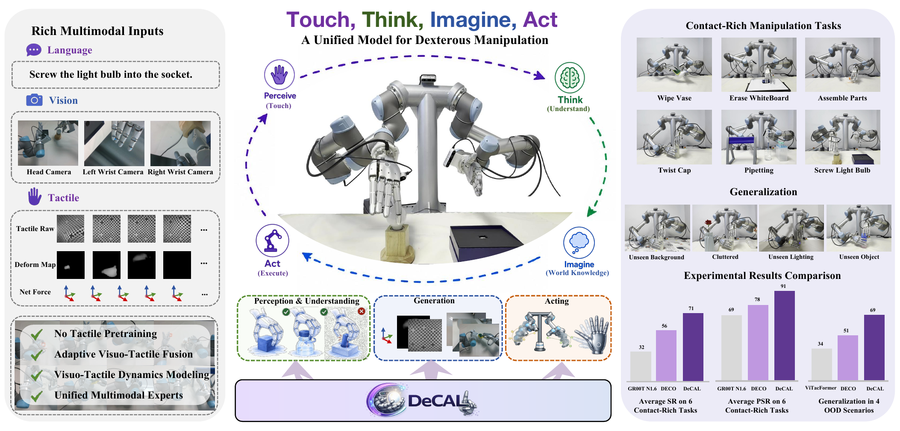
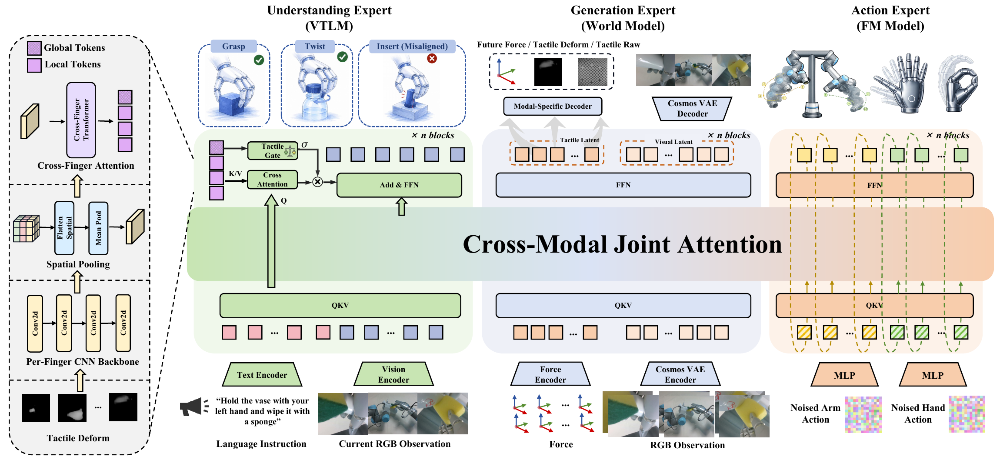
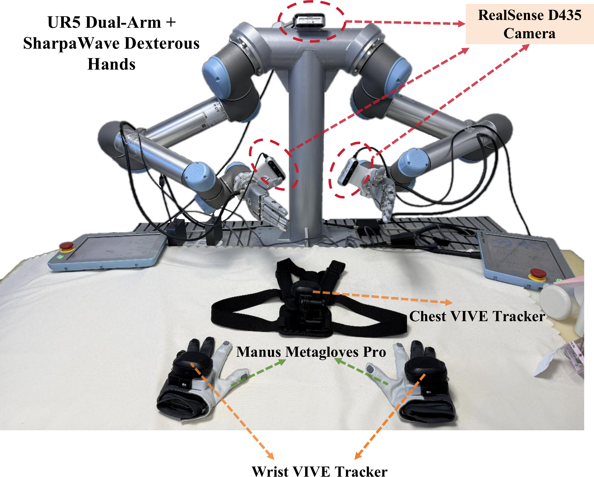
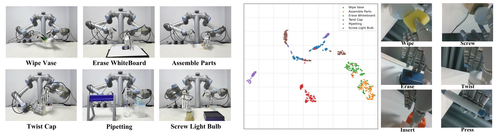
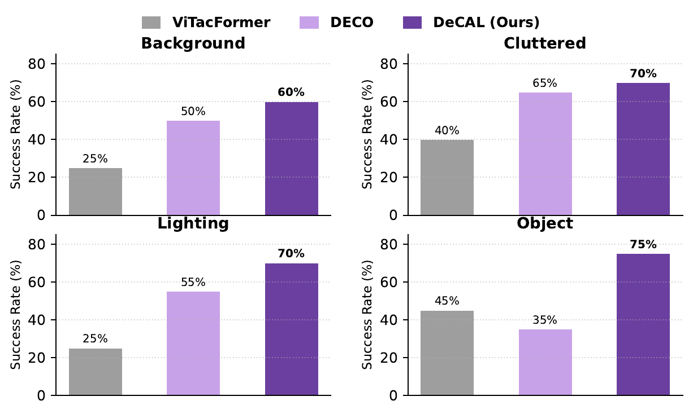
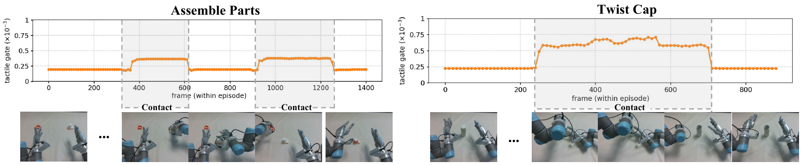

Collaborative MoT
An Understanding Expert, a Generation Expert, and an Action Expert exchange information through asymmetric cross-modal joint attention. Later experts can attend to all preceding knowledge while keeping each capability specialized.
CoRL 2026

Dexterous manipulation involves contact-rich and fine-grained interactions with the physical world, posing significant challenges for existing vision-language-action models because of severe visual occlusions and complex contact dynamics. While recent work has incorporated tactile sensing into robotic manipulation, most approaches still rely on homogeneous multimodal fusion, without adaptive tactile integration or explicit modeling of physical dynamics.
We present DeCAL, a physically-grounded dexterous vision-language-action model that unifies understanding, imagination, and action generation. Built on a Mixture-of-Transformers architecture, DeCAL introduces Adaptive Visuo-Tactile Fusion to regulate tactile interaction through contact-aware gating, and Visuo-Tactile Latent Co-Imagination to jointly model future visual and tactile dynamics. Across six real-world tasks, DeCAL reaches a 71% average success rate and an 83.4% progress success rate, while maintaining strong out-of-distribution generalization.
Three collaborative experts share knowledge through directional joint attention, turning touch and vision into physically-grounded action.

DeCAL is built upon a MoT architecture that unifies scene understanding, visuo-tactile dynamics foresight, and action generation. The Action Expert employs Factorized Flow Matching to decouple arm and hand motion, enabling better coordination and dexterous manipulation.
An Understanding Expert, a Generation Expert, and an Action Expert exchange information through asymmetric cross-modal joint attention. Later experts can attend to all preceding knowledge while keeping each capability specialized.
Per-finger tactile deformation maps become local and global tokens. A contact-aware gate raises the contribution of tactile evidence during physical interaction and suppresses it when vision should dominate.
The world-model expert predicts future visual and tactile latents, including force, deformation, and raw tactile signals. This forward-looking supervision embeds implicit physical dynamics into the policy.
Arm and hand actions start from independent noise distributions, then are jointly processed for coordinated motion. Decoupling their dynamics preserves fine-grained hand control without losing bimanual coordination.
The real-world platform combines two 6-DoF UR5 arms, two 22-DoF SharpaWave hands, three Intel RealSense D435 cameras, and high-resolution vision-based tactile sensing on every fingertip.

Six contact-rich tasks, 100 demonstrations per task, and 20 real-world evaluation trials for every method.

We analyze the global tokens extracted by the tactile encoder using t-SNE. For each task, we sample frames from distinct contact phases, covering diverse interaction patterns such as twisting, insertion, and wiping. As shown in the figure above, the learned global tactile representations form clear clusters across different contact modes, indicating that the encoder captures meaningful and structured physical interaction patterns.
| Method | Wipe | Erase | Assemble | Twist | Pipetting | Screw | Avg. |
|---|---|---|---|---|---|---|---|
| GR00T N1.6 | 30 | 50 | 30 | 10 | 60 | 10 | 32 |
| InternVLA-A1 | 65 | 50 | 15 | 5 | 35 | 30 | 33 |
| ViTacFormer | 80 | 45 | 15 | 65 | 55 | 25 | 48 |
| DECO | 90 | 60 | 35 | 70 | 45 | 35 | 56 |
| DeCAL (Ours) | 100 | 80 | 65 | 80 | 60 | 40 | 71 |
DeCAL remains robust when the scene, illumination, or manipulated object moves beyond the training distribution.

DeCAL leads all evaluated baselines across background, clutter, lighting, and object shifts. Its largest margin appears on the unseen-object setting, where geometric and force cues become especially important.
The contact-aware gate regulates when tactile evidence should influence the policy during dexterous interaction.

Across Assemble Parts and Twist Cap testing episodes, the gate remains low during non-contact motion, allowing visual observations to dominate. Once meaningful physical contact occurs, the gate value rises sharply and increases the contribution of tactile information to action generation.
With all other components enabled, removing tactile gating reduces success on both evaluated tasks.
| Task | Without gate | With gate | Gain |
|---|---|---|---|
| Assemble Parts | 50% | 65% | +15% |
| Twist Cap | 70% | 80% | +10% |
@article{fu2026decal,
title={DeCAL: Towards Physically-Grounded Dexterous Vision-Language-Action Models via Contact-Aware Latent Co-Imagination},
author={Yankai Fu, Ning Chen, Junkai Zhao, Heng Zhang, Pengwei Wang, Zhongyuan Wang, Shanghang Zhang},
journal={arXiv preprint},
year={2026}
}